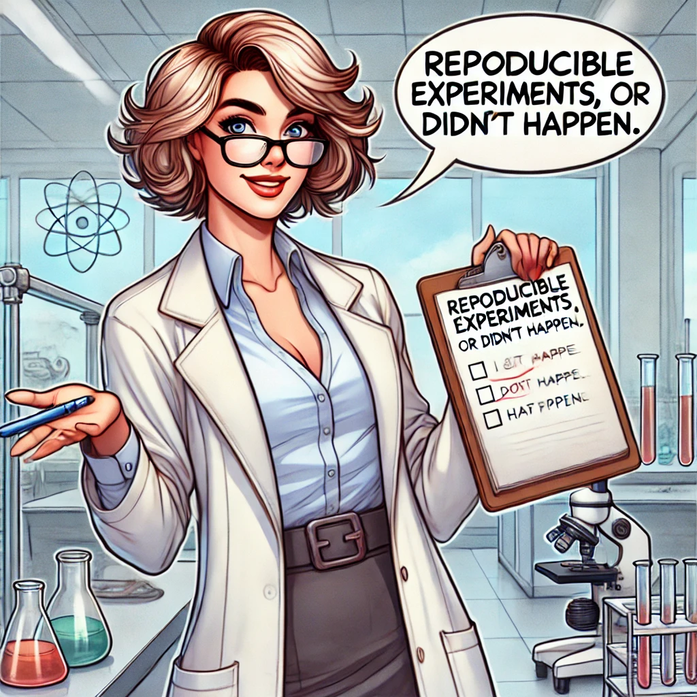
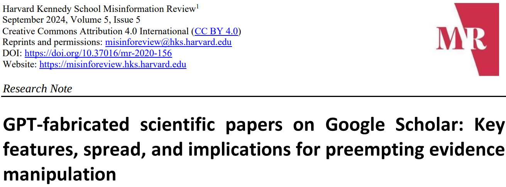
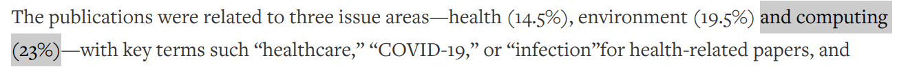
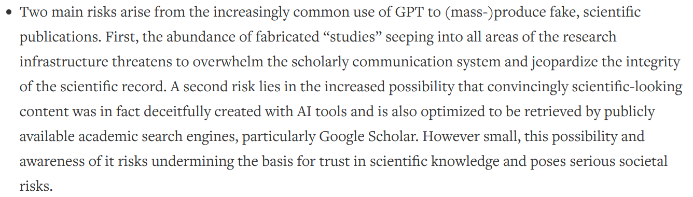

PhD forum talk @ ACSOS 2024
2024-09-13
Danilo Pianini
Alma Mater Studiorum – Università di Bologna
source: https://www.earth.com/news/hippopotamus-population-hit-hard-by-habitat-destruction
Hippos (Hippopotamus amphibius) facts
- Big (second largest land animal after elephants)
- (Relatively) Fast (30km/h on land, 8km/h in water)
- Strong bite (13.8MPa, twice the strength of a lion bite)
- Aggressive and highly unpredictable
- Among the deadliest animals worldwide by human deaths
I’m now making a claim, and I want to see if you believe me
An adult hippo’s bite can crush in half an adult crocodile
Please raise your hand if you believe this claim
Please raise your hand if you believe this claim now
Let’s do the same game
Humans can tame and ride hippos
Please raise your hand if you believe this claim
Please raise your hand if you believe this claim now
Would it be more convincing if I precisely explained how the hippo was tamed and ridden?
Would it be more convincing if multiple independent people applied the same procedure and obtained the same result?
Picture Reproducible experiments, or didn’t happen

AI didn’t like the letter R

Replication crisis
aka replicability crisis or reproducibility crisis
-
ongoing methodological crisis
-
the results of many scientific studies are hard or impossible to reproduce.
-
empirical reproductions are essential for the the scientific method
no reproducibility $\Rightarrow$ scientific credibility is undermined
  
The good news: people working in computer science are lucky!
(on average)
- It’s the only engineering discipline producing mass-less artifacts
- Much easier to share
- Even if we work in highly unpredictable contexts, we can control randomness in many experiments
- Much easier to reproduce
- We have support tools to track changes, automate, and manage complexity
- Much easier to maintain
Develop and share your tool or experiment, checklist
- Set up a version control system
- Prepare a code repository
- Set up a build automation system
- Make sure you can control randomness
- Work in isolation using containers
- Raise your confidence with continuous integration and continuous delivery
- Pick a good license
- Document your work
Version Control Systems
- Keeps track of changes
- Fosters collaboration
- Foundational tool for sharing through well-known source code hosting platforms
Dos
- set it up early to support the construction of the artifact
gitis a standard de-facto, use it- track only non-generated files $\Rightarrow$ set up and maintain a good
.gitignore - take your time to understand how to solve conflicts
- learn the basics using a terminal
Don’ts
- start using it when it is time to share the artifact
- pick niche and/or declining tools (even if they are good –
hg,svn…) - paste commands / fiddle with UIs without understanding what you are doing
- delete the repo and start over
Advanced
- Use it for the paper, too, if you write in $\LaTeX$
- Agree on a branching strategy with your collaborators
- Learn
rebase,bisection,cherry-pick, and other advanced features
Public code repositories
- The place where others will search for your code
- Especially if it is a tool or a library
- Fosters collaboration
- Provide many useful ancillary services
- Issue tracking
- Continuous integration
- Documentation hosting
Dos
Don’ts
- share only through your institutional website, unless you are forced to
- upload archives instead of code, it’s not a 1990s FTP server
Advanced
- use pull requests to contribute upstream or integrate changes if it is a long-lived project
- investigate the additional services, e.g., bots that propose dependency updates
Build automation
- Automatic fetch and download of software dependencies
- Automatic compilation and packaging
- Automatic testing
- Automatic execution of the experiments
Dos
- pick tools based on the language/ecosystem favoring those most used in the development community
- Java / Kotlin $\Rightarrow$ Gradle
- JavaScript $\Rightarrow$ npm
- Python $\Rightarrow$ poetry
- strive to have a single short command on a freshly cloned copy run the entire experiment or test and pack the tool
- minimize the pre-requirements
Don’ts
- require manual steps
- rely on dependencies not available in mainstream repositories
- require an IDE to run the experiments
Advanced
- use the build tool to install the toolchains, if possible (see e.g., the Gradle Toolchains)
- build a one-command, zero-setup demo, e.g.:
curl -sL https://bit.ly/dais-2023-loadshift | bash
Control randomness
- Obtain the same exact results when running the same experiment
- When building a tool or library, make sure that the same input produces the same output
Dos
- always seed your pseudo-random number generator
- when modeling a random process, always expose an API to set the seed
- when interacting with the real-world, use mocks or stubs (there are many great testing libraries that provide them)
Don’ts
- call
Math.random(),random.randint,rand()or similar functions
Advanced
- In case of unavoidable randomness, e.g., due to parallelism, provide a companion experiment (smaller in size) that can be executed deterministically
Isolation and self-containment via containers
- It runs on your machine? Ship your machine!
- Easy to share lightweight virtual machines (NOTE: they are not VMs)
- They apply to experiments, much less to tools
Dos
- prepare one or more
Dockerfiles packing your experiment and all its dependencies - prefer containers over setup instructions for clients
- publish your images on a public registry (e.g., dockerhub)
Don’ts
- mount and write into user-local folders with the
rootuser - until they allow access without a token, avoid GitHub’s
ghcr.ioregistry
Advanced
- Use orchestrators such as
docker-composeto manage complex setups
Example: https://github.com/nicolasfara/experiments-2024-ACSOS-imageonomics-drones
Continuous integration and continuous delivery
- For each change, automatically run a verification process
- Easy to share lightweight virtual machines (NOTE: they are not VMs)
Dos
- set up the CI/CD pipeline as soon as possible
- most code hosting platforms provide it for free within limits
- rely on the build process that you set up before
- deliver the artifacts automatically if the verification succeeds
- produce a reduced version of the experiments that can serve testing purposes and can be used as quick demo
Don’ts
- run the whole experiments in the pipeline even if they take hours
Advanced
- automatically deal with updates and patches using a automatic merging rules for PRs
- automatically release new versions (checkout Semantic Release)
Example: https://github.com/nicolasfara/experiments-2024-acsos-multi-tier-field-based-applications
Pick a license
- Unlicensed software is proprietary
- the copyright exsists even if you don’t write it, unless you explicitly renounce to part of it
- Pick the right license for the job, depending on your goals
Dos
- use a standard license (e.g., MIT, Apache, GPL, LGPL)
- check what your license allows and what it does not
Don’ts
- concoct your own license
- exception: adding a linking/classpath exception to the GPL
- use a funny license, such as Beerware or WTFPL
Rules of thumb
- if people to do whatever they want to, use MIT or BSD
- if you want to track contributions or protect trademarks, use Apache 2.0
- do not use GNU LGPL if you want companies to use your library
- forces the linking software to be partly reverse-engineerable
- a GNU GPL with linking/classpath exception is more permissive
- if you wanto to be protective and force everyone using your stuff to release theirs, use GNU GPL
- if your software is networked, consider GNU Affero in place of GNU GPL
- do not use Creative Commons licenses for software
- for any detailed use, ask your legal team
Archival copies and digital object identifiers
- Don’t let your software disappear
- Let other reference specific versions of your software through a DOI
Dos
Don’ts
- upload software manually to archives
Advanced
- treat your documentation as you treat your software: version it, review it, test it
- configure the CI/CD pipeline to automatically build and deploy the documentation
Example: https://github.com/anitvam/dsrt-2024-jakta-alchemist $\Rightarrow$ 
Document your work
- Help other people understand your work
- Help other people build on your work
Dos
- pick a framework to better organize your documentation
- I recommend the DIVIO documentation system
- leverage GitHub Pages or similar services to host your documentation
- with every organization, you get a free static website
https://<org>.github.io/ - you get one with every repository, too, at
https://<username>.github.io/<repository>
- with every organization, you get a free static website
- use a static site generator (e.g., Hugo, Jekyll) to convert Markdown documentation into a website
Don’ts
- use HTML/js/CSS directly, it’s hard to maintain
Advanced
- treat your documentation as you treat your software: version it, review it, test it
- configure the CI/CD pipeline to automatically build and deploy the documentation
Conclusion
- Make sure others can reproduce your experiments
-
Lower the maintenance burden of your tools by using DevOps techniques
- Version Control
- Build Automation
- Containerization
- CI/CD
- Upload your artifacts where others are likely to search for them
- Make your experiment future-proof by archiving os software-preservation platforms
- Don’t forget to apply a license
And of course, don’t try to tame and ride a hippo